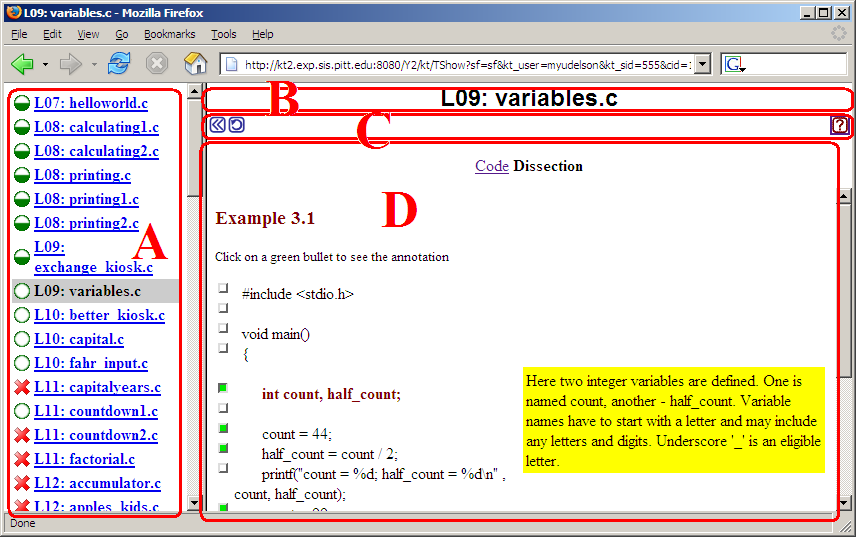

Below some NavEx window areas are explained in more detail.Knowledge map is a list of links to dissections. Each link is annotated with a bullet. If you have made enough progress to master the dissection the bullet is a green disk and dissection is availabe to you, otherwise the bullet is a red cross and dissection is unavailable (though you are free to explore it)
The bullt also shows your progress with dissection. As you explore each dissection (below) progress changes from 0%-, to 25%-, 50%-, 75%-, and finally 100%-. The current dissection you are working with is highlighted grey .
Dessections can have prerequisites. If you have made enough progress with all prerequiaites of a dissecion it becomes available. From the very start there is a small number of dissections available (those that do not have prerequisites). As you explore available dissections and make enough progress with them (generally to explore 50% of the dissection is enough progres) more dissections become available.
Menu has 3 buttons:
Dissections are displayed in two ways:
While in an advanced mode you can click on green bullet next to some lines of code and hence display annotation text, that helps you understand the code better. Each click increments your progress with the dissecion. As you click on more green bullets your progress through dissection. To update your progress click on -reload menu button (above).